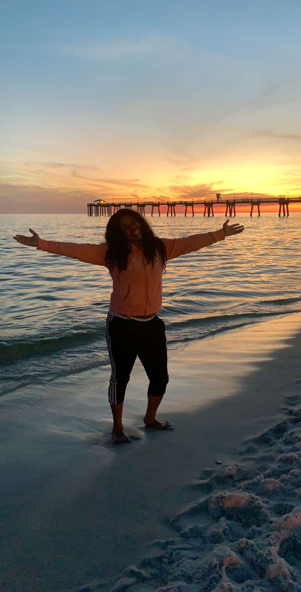
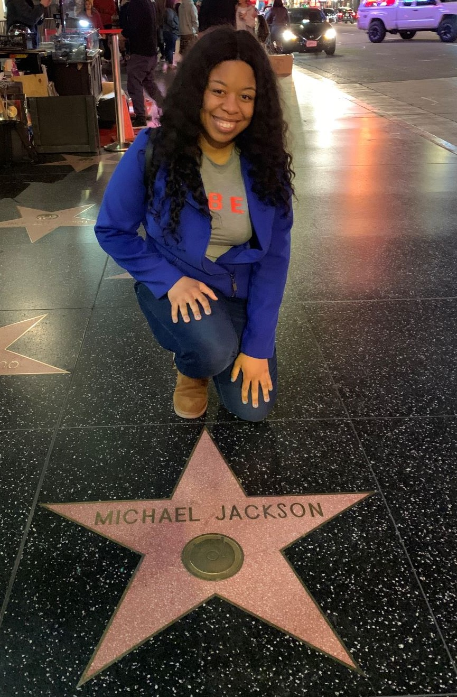
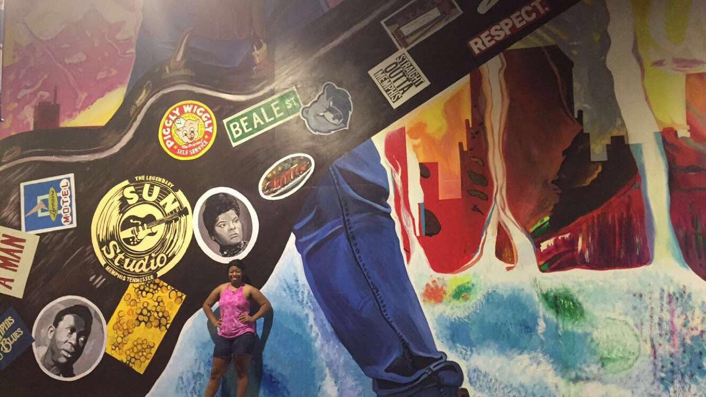

Hello! I am Ay'sha! I'd like to consider myself as a puzzle. There are many bits and pieces that make up a big picture.
I am inspired by many things and I enjoy many things. Some of my favorite things are science, technology, art, music, and food! I enjoy traveling and spending time with my loved ones.
My ultimate goal is to live my best life and serve my purpose in this world. Follow along as I break
down a few pieces of the puzzle.

Memphis Made Mane!
I am from Memphis, Tennessee! I love everything about my hometown! I believe Memphis has so much potential to be just as great if not
greater than other cities. I am a proud Memphian and
I plan to make an positive impact within this city! Memphis versus Everybody! Go Grizz!
Go STEM!
I have always had an affinity for the sciences. I can recall staying up late nights watching Bill Nye the Science Guy.
I also grew up watching my aunts install our home PC and eventually learned how to install and sometimes fix the computer on my own.
This is the reason I am a STEM student today. I am currently studying Chemistry in pursuit to research medicine at St. Jude Children's
Research Hospital. I have earned two CompTIA certifications, IT Fundamentals and A+. Since earning my certifications, I have began building a mobile device
repair business called All Things Tech Repair. In the next
five years, I plan to be researching at my dream job, owning my own business (All Things Tech®), and advocating STEM education for underrepresented youth.

Press Play!
As quoted by one of my favorite songwriters, Stephen "Static Major" Garrett, "Music is like breathing." I love listening to music! When I was
younger, I would collect CDs and spend most of my day watching music television. I enjoy listening to gospel, r&b, hip hop, pop and neo-soul.
I enjoy attending concerts and music festivals. If I could see any artist live in concert, it would be the King of Pop, Michael Jackson!

Art Lover!
Visiting art galleries is also a favorite hobby of mine. I enjoy original artwork including photography and street art. I find myself
fascinated with pieces that express raw emotion and celebrates culture. I recently visited an art gallery, Studio BE, located in New
Orleans, Louisiana. My favorite piece was a canvas of a little carefree black girl. My ultimate goal is to start collecting artwork.
